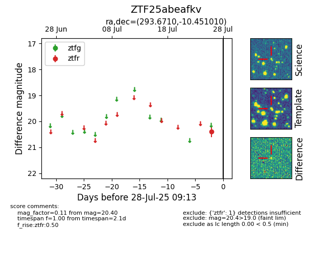

Target ZTF25abeafkv at 2025-07-28 09:13, see:
FINK: fink-portal.org/ZTF25abeafkv
Lasair: lasair-ztf.lsst.ac.uk/objects/ZTF25abeafkv
ALeRCE: alerce.online/object/ZTF25abeafkv
alt names
ZTF25abeafkv (ztf,fink)
coordinates:
equatorial (ra, dec) = (293.6710,-10.45101)
galactic (l, b) = (28.3551,-14.29337)
photometry
last ztfr=20.40
1 ztfr detections
